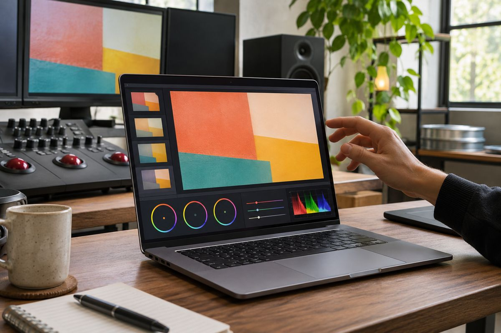

노트북 / EXPLAINED
터치와 탠덤 OLED를 얹은 MacBook Pro, 11월 6일 판매 예정
Apple이 10월 28일 발표한 14·16인치 PROLED XDR 모델은 M5 Pro 또는 M5 Max를 쓴다. 화면에 붙은 숫자와 작업 환경을 함께 봐야 한다.

판매 전 확인할 모델 구분
Apple은 10월 28일 PROLED XDR 화면을 갖춘 MacBook Pro를 공개하고 같은 날 예약 주문을 시작했다. 안내된 공급 시작일은 11월 6일이다. 14인치와 16인치에 M5 Pro 또는 M5 Max 조합이 있다. 이름에 MacBook Pro가 들어간다는 이유로 같은 시기 발표한 M6 14인치 제품과 화면·칩 구성이 같다고 생각하면 안 된다. 화면 기술명과 칩 이름을 함께 보는 것이 구분의 출발점이다.
탠덤 OLED와 최대 밝기
OLED는 화소가 스스로 빛을 내는 화면 기술이다. 탠덤은 발광 구조를 여러 층으로 쌓는 방식이다. Apple은 이 화면의 최대 밝기를 HDR과 SDR에서 2,000니트로 제시한다. 최대 밝기는 특정 조건에서 밝은 부분을 표시할 때의 수치로, 큰 화면 전체를 같은 밝기로 계속 구동한다는 뜻은 아니다. 색을 다루는 작업이라면 사용 환경에서 밝기가 얼마나 일관되게 유지되는지, 반사와 시야각은 어떤지가 함께 중요하다.
터치는 어떤 작업에 맞을까
Mac에서 화면을 직접 조작하는 기능을 처음 제공한다는 것이 발표의 또 다른 변화다. 편집부는 화면을 짚어 확대하거나 조정할 때에는 직접 조작이 편할 수 있다고 본다. 반대로 키보드 단축키와 정밀한 포인터 조작으로 익숙한 작업에서는 손을 화면까지 옮기는 것이 더 번거로울 수 있다. 자주 쓰는 프로그램이 어떤 동작을 지원하는지에 따라 터치의 가치는 달라진다. 화면 터치 지원만으로 모든 펜이나 태블릿용 작업 흐름을 사용할 수 있다고 가정해서는 안 된다.
비교의 기준을 가격표 밖으로
Apple의 미국 발표 기준 14인치 M5 Pro 모델의 시작가는 2,899달러다. 세금, 메모리·저장장치 옵션과 지역별 가격이 달라 실제 결제 금액은 다를 수 있다. 작업용 노트북을 비교할 때는 밝기와 칩 이름 외에, 필요한 외장 화면, 파일 저장 크기와 전원 연결 환경을 기준으로 구성을 좁히는 편이 도움이 된다.
아직 확인이 필요한 성능
출시 전 제조사 자료는 지원 기능을 파악하는 데 쓸 수 있다. 실제 편집 프로그램을 장시간 돌렸을 때의 화면 밝기, 발열과 배터리 소모는 같은 파일과 설정을 사용한 시험으로 비교해야 한다. 판매 시작일이 개별 주문의 배송 날짜를 확정하는 것도 아니다. 모델별 공급과 가격은 주문하려는 지역에서 확인할 사항이다.
밝기 조건은 한 화면 안에서도 달라진다
예를 들어 검은 배경의 영상에서 작은 하이라이트를 표현하는 상황과, 흰 바탕의 문서를 화면 가득 열고 오래 편집하는 상황은 패널에 요구하는 빛의 양이 다르다. 같은 최대 밝기 숫자를 두 작업에 똑같이 적용하면 사용 환경과 차이가 생긴다. 영상 편집자가 기존 장비와 비교한다면 같은 밝기 설정과 같은 클립을 놓고 자막, 암부, 밝은 영역을 각각 확인하는 편이 낫다. 촬영 현장에서 쓴다면 창가 조명과 실외 반사 조건도 별도의 비교 항목이 된다.